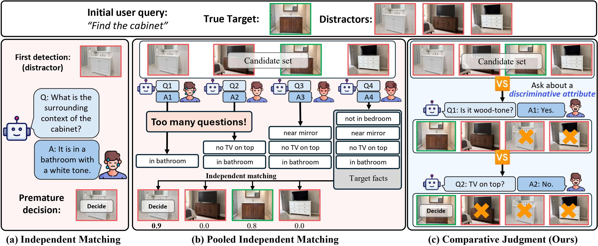
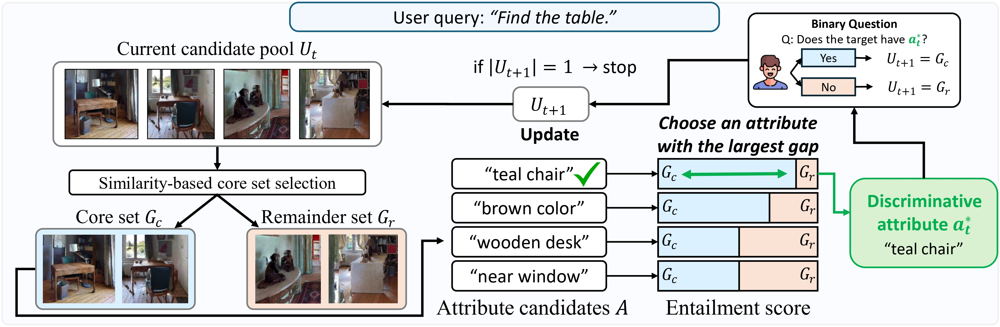
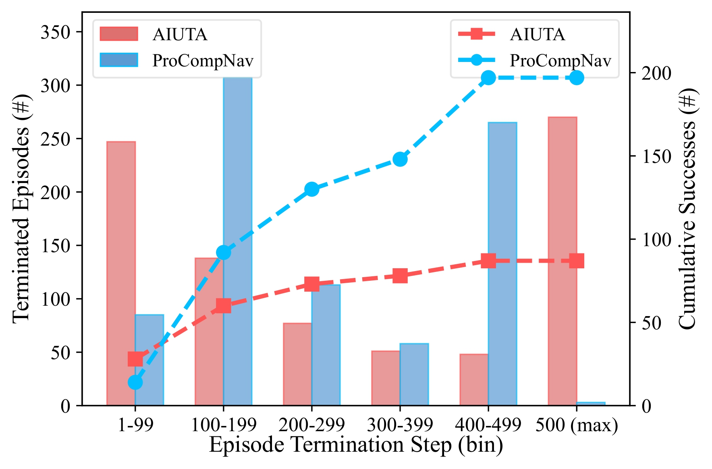
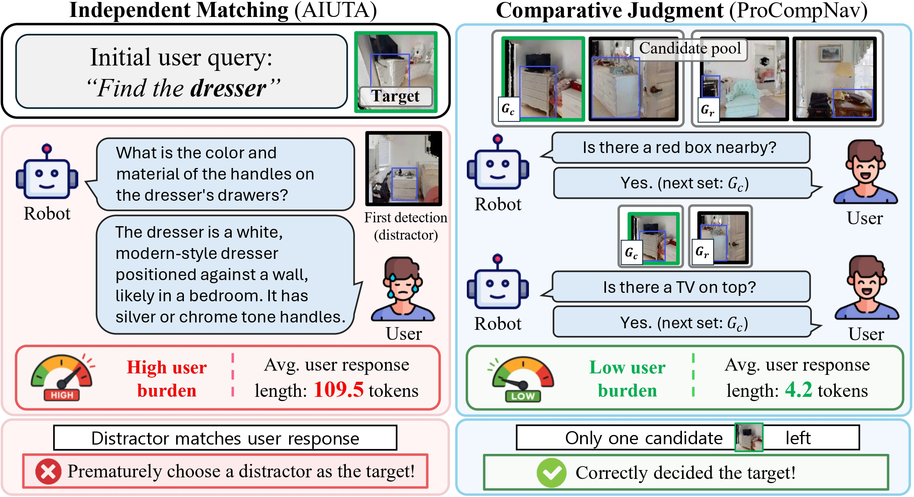

Three disambiguation strategies on CoIN-Bench. Independent matching (AIUTA) commits to the first plausible detection and often picks a distractor. Constructing a candidate pool first (Pooled Independent Matching) lifts SR substantially, but the resulting questions are still per-candidate, so they remain verbose (Response Length 460–520) and may stay non-discriminative. ProCompNav adds comparative judgment on the same pool: each round picks an attribute-value pair that splits the pool and asks a single yes/no question, jointly improving SR and slashing user burden (RL 4.2–4.3).
| Decision Strategy | Stage | Val Seen | Val Seen Synonyms | Val Unseen | |||||||
|---|---|---|---|---|---|---|---|---|---|---|---|
| Pool | Compare | SR↑ | RL↓ | NQ↓ | SR↑ | RL↓ | NQ↓ | SR↑ | RL↓ | NQ↓ | |
| (a) Independent Matching [Taioli et al., 2025] | ✗ | ✗ | 10.5 | 109.5 | 1.2 | 15.3 | 129.2 | 1.2 | 8.9 | 122.8 | 1.3 |
| (b) Pooled Independent Matching | ✓ | ✗ | 17.5 | 460.2 | 3.6 | 22.0 | 519.2 | 3.7 | 13.3 | 467.7 | 3.4 |
| (c) Comparative Judgment (Ours) | ✓ | ✓ | 23.7 | 4.2 | 2.2 | 28.1 | 4.3 | 2.2 | 17.0 | 4.2 | 2.3 |
Table 1. Comparison of three disambiguation strategies on CoIN-Bench (SR = Success Rate, RL = avg. total Response Length per episode, NQ = avg. Number of Questions per episode).

Figure 1. Each round of ProCompNav picks an attribute-value pair that splits the candidate pool into two non-empty groups, asks a single binary question, and prunes inconsistent candidates — it never needs an attribute that uniquely identifies the target.
Natural-language instance navigation becomes challenging when the initial user request does not uniquely specify the target instance. A practical agent should reduce the user's burden by asking only the information needed to distinguish the target from similar distractors, rather than requiring a detailed description upfront.
ProCompNav is a training-free, two-stage framework. It first explores the scene to build a candidate pool of plausible targets, then identifies the target through comparative judgment: at each round it picks an attribute-value pair that splits the current pool into two non-empty groups, asks a single binary yes/no question, and prunes all inconsistent candidates at once.
Crucially, comparative judgment does not need an attribute that uniquely identifies the target. Every round only needs a valid splitter, whereas pooled independent matching is reliable only when the collected evidence is already sufficient to separate the target from its distractors. ProCompNav therefore reframes disambiguation from open-ended target description to pool-level discriminative questioning, where each question is chosen to narrow the candidate set.

Figure 2. ProCompNav has two stages. (1) Pool Construction explores the scene with a value-map frontier policy and accumulates visually-similar instances of the target category into a candidate pool. (2) Recursive Comparison selects an attribute-value pair that splits the current pool into a cohesive core set (Gc) and a remainder (Gr), asks the user a single binary question about that pair, and prunes the group inconsistent with the answer. The process recurses until a single candidate remains.
ProCompNav achieves the highest Success Rate on every CoIN-Bench split while requiring only category-level input. Among training-free methods using only category-level queries, ProCompNav improves over the strongest interactive baseline (AIUTA*) by +13.2 / +12.8 / +8.1 SR on Val Seen / Val Seen Synonyms / Val Unseen.
| Method | Condition | Val Seen | Val Seen Synonyms | Val Unseen | ||||
|---|---|---|---|---|---|---|---|---|
| Judge | Interact | SR↑ | SPL↑ | SR↑ | SPL↑ | SR↑ | SPL↑ | |
| Training-based | ||||||||
| Monolithic-GOAT [Khanna et al., 2024]† | – | ✗ | 6.6 | 3.1 | 13.1 | 6.5 | 0.2 | 0.1 |
| PSL [Sun et al., 2024]† | – | ✗ | 8.8 | 3.3 | 8.9 | 2.8 | 4.6 | 1.4 |
| Training-free (description input) | ||||||||
| 3D-Mem* [Yang et al., 2025] | Comp | ✗ | 15.9 | 11.0 | 18.9 | 13.6 | 5.7 | 3.9 |
| Context-Nav [Jang and Kim, 2026]‡ | Indep | ✗ | 13.5 | 6.7 | 20.3 | 10.9 | 11.3 | 5.2 |
| Training-free (category input) | ||||||||
| VLFM [Yokoyama et al., 2024]† | Indep | ✗ | 0.4 | 0.3 | 0.0 | 0.0 | 0.0 | 0.0 |
| AIUTA [Taioli et al., 2025]† | Indep | ✓ | 7.4 | 2.9 | 14.4 | 8.0 | 6.7 | 2.3 |
| AIUTA* | Indep | ✓ | 10.5 | 4.5 | 15.3 | 8.4 | 8.9 | 4.0 |
| Pooled Independent Matching | Indep | ✓ | 17.5 | 5.1 | 22.0 | 8.1 | 13.3 | 5.1 |
| ProCompNav (Ours) | Comp | ✓ | 23.7 | 7.0 | 28.1 | 8.5 | 17.0 | 6.2 |
Table 2. Performance on CoIN-Bench. Judge = Indep (independent matching) or Comp (comparative judgment); Interact = whether the agent interacts with the user. †taken from [Taioli et al., 2025], ‡taken from [Jang and Kim, 2026]; * denotes our reproduction using the same MLLM/LLM as ProCompNav.
AIUTA (independent matching) shows a bimodal failure pattern: it either terminates very early (1–99 steps, mostly premature distractor decisions) or runs out of time at the 500-step horizon. ProCompNav, by deferring the decision and disambiguating with comparative judgment, concentrates terminations in the 100–499-step sweet spot with substantially more cumulative successes.

Figure 3. Episode termination-step distribution (bars, left axis) and cumulative successes (dashed lines, right axis) on CoIN-Bench Val Seen.
ProCompNav generalises to the non-interactive Text-Goal Instance Navigation (TextNav) benchmark by extracting attributes from the detailed initial goal description instead of querying the user. It still achieves the highest SR (28.5%), confirming that the core mechanism — collect candidates, then compare — remains effective even when no user dialogue is available: candidates still need to be compared against one another rather than scored independently.
| Method | Judgment | SR↑ | SPL↑ |
|---|---|---|---|
| Training-based | |||
| Modular-GOAT [Khanna et al., 2024]† | – | 17.0 | 8.8 |
| PSL [Sun et al., 2024]† | – | 16.5 | 7.5 |
| Training-free | |||
| UniGoal [Yin et al., 2025]† | Indep | 20.2 | 11.4 |
| AIUTA* [Taioli et al., 2025] | Indep | 10.9 | 2.7 |
| 3D-Mem* [Yang et al., 2025] | Comp | 14.1 | 9.6 |
| Context-Nav [Jang and Kim, 2026]‡ | Indep | 26.2 | 9.1 |
| ProCompNav (Ours) | Comp | 28.5 | 6.9 |
Table 4. Performance on TextNav. †taken from [Yin et al., 2025], ‡taken from [Jang and Kim, 2026]; * denotes our reproduction using the same MLLM/LLM as ProCompNav.
For the ambiguous query "Find the dresser", the independent-matching baseline asks the user to describe a target attribute without knowing whether that attribute distinguishes the target from distractors. This produces a long descriptive response and often locks onto a distractor that shares the same attribute. ProCompNav instead defers its decision, builds a candidate pool, and asks short binary discriminative questions (e.g., "Is there a red box nearby?"), isolating the user-intended target while reducing user response length to a few tokens.

Figure 4. Qualitative comparison of independent matching and ProCompNav on a minimally specified query.
@article{kwon2026proactive,
title={Proactive Instance Navigation with Comparative Judgment for Ambiguous User Queries},
author={Kwon, Junhyuk and Lee, Seungjoon and Park, Hyejin and Min, Kyle and Ok, Jungseul},
journal={arXiv preprint arXiv:2605.06223},
year={2026}
}This codebase is built upon VLFM and AIUTA / CoIN. We thank the authors for their excellent work and for releasing their code and benchmarks.